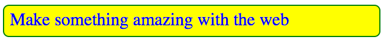

Hello again! I hope you've been having fun the last couple of weeks playing around with HTML. This week we are going to leave it behind and move on to looking at CSS instead. CSS is the language we use to style our HTML content, whether we want to change colours, make text bigger, change the size or positioning of HTML elements, or whatever else we want to do to make things look cool.
You can find a useful reference to the most common CSS features you'll want to use: see the CSS Cheatsheet.
CSS basic anatomy
Let's revisit the basics of CSS again, in a bit more detail this time.
- First of all, create a new Thimble page just to play around in. The
bodyof your HTML should already contain a single paragraph. Let's style it with a CSS rule. - Enter an opening
<style>tag just before your closing</head>tag, then press Enter a couple of times, then enter a closing</style>tag. Inside thestyleelement is where we will write our CSS. - Inside the
styleelement, write the following bit of CSS:
p {
color: blue;
}Your paragraph's text should now be a funky blue colour! To explain what the different parts are in more detail:
- The whole thing is called a CSS ruleset (although most people just say rule.)
- The
pis the selector. This selects what HTML elements on the page should be styled by the CSS rule. In this case, we are telling it to select allpelements on the page. - The
color: blueis called a declaration. You are declaring that you want to give a certain property of the HTML elements selected by the rule a certain value.coloris the property you are setting a new value for.blueis the value you are giving that property.
- the declarations of your rule have to be wrapped in curly braces (
{ ... }).
Note the American spelling of "color". When web programming languages were invented, the agreement was that we would all use American spellings to avoid confusion and make things easier.
You can add as many declarations as you want to in each CSS rule that you write. You just need to remember to put a colon (:) in between each property and its value, and separate each declaration with a semi-colon (;). Try adding a few more of these to your CSS rule:
p {
color: blue;
font-size: 30px;
background-color: yellow;
border-radius: 10px;
border: 2px solid green;
padding: 10px;
}The finished result should look something like the below image
CSS doesn't care about how much whitespace you put around the different bits. So
p {color:blue;}Actually has exactly the same effect as
p {
color: blue;
}It is all down to what style you prefer to write. I prefer the second one, as it is easier to read what is going on.
Where does the CSS go?
We have already seen CSS being put into a style element inside the HTML head. This is called an Internal stylesheet, as it is inside the HTML.
It is also possible to put CSS inside individual HTML elements, inside a style attribute. For example, try putting this in your HTML body:
<h1 style="text-shadow: 2px 2px 1px green;">My text rocks</h1>A heading wouldn't normally have a funky green drop shadow on it, but we have given it one via the text-shadow property inside our style attribute. Doing it this way is called inline CSS, as it is put straight inside the lines of HTML, rather than being separated out. This way of doing it is really bad though, and you shouldn't do it unless you really have to.
Can anyone think why?
The final way of doing it is via an external stylesheet, which is CSS that sits outside your HTML document altogether, in a separate CSS file. So you might save all your HTML in a file called example.html, then pull your CSS out of the HTML and put it into a separate file called style.css (just the CSS, not the <style></style> tags.) You then link the CSS to the HTML by including a link element inside your HTML head, which looks like this:
<link href="style.css" type="text/css" rel="stylesheet">We won't get into this linking business much in the course; here we'll just keep using internal stylesheets in Thimble.
Different types of selector
We'll look at a few different types of selector in this course. So far you have only seen element selectors, for example p and h1, which select all of the elements of that type on an HTML page. The other two main selectors you'll come across are called class and id selectors, which select HTML elements that have certain id or class attribute values.
Note that the difference between classes and ids is that you can have as many HTML elements as you want with the same class value, but you can only have a single element with each id value. ids are unique identifiers, meaning there can be only one on each HTML page.
Let's look at an example. Say you have a lot of paragraphs in your HTML, like so:
<p>Make something amazing with the web</p>
<p>My third paragraph</p>
<p>And another one!</p>
<p>Annnnd another...</p>
<p>My word there are loads of these!</p>If you use a paragraph selector (p) then you will be able to select and style all of these at once, but what if you only want to select one, or a few of them? This is where classes and ids can come in very useful. Let's add a few to our above example
<p>Make something amazing with the web</p>
<p class="special">My third paragraph</p>
<p>And another one!</p>
<p class="special">Annnnd another...</p>
<p id="the-end">My word there are loads of these!</p>We can now select only the second and fourth paragraphs in my example using a class selector. You form a class selector using the class name with a dot (.) at the start, so for example:
.special {
color: blue;
}And we can now select only the fifth paragraph in my example using an id selector. You form an id selector using the id name with a hash symbol (#) at the start, so for example:
#the-end {
color: blue;
}There are a lot of different types of selector to learn about: See the WebPlatform.org CSS selectors reference.
Time to play
In the final part of our lesson we'll turn to our projects, and play with some interesting CSS properties. Try adding these to some content and see where you get! Below I've listed each property name with a description of what the value needs to be, and an example
color: Sets the colour of the text inside your element. This needs to be a single CSS colour value, for examplecolor: blue;.background-color: Sets the colour of the element's background. This needs to be a single CSS colour value, for examplebackground-color: red;font-size: Makes the text bigger or smaller. This can be for example a specific size (24px), a relative size (400%) or other CSS length values. For example,font-size: 48px;padding: This sets the amount of space you have around the content of your HTML element. This can be for example a specific size (24px), a relative size (30%) or other CSS length values. For example,padding: 10px;to set all four sides the same, orpadding: 5px 20px 10px 30px;to set each side indivudally.margin: This sets the amount of space you have around the outside of your HTML element. This can be for example a specific size (24px), a relative size (30%) or other CSS length values. For example,margin: 10px;to set all four sides the same, ormargin: 5px 20px 10px 30px;to set each side individually.border: This sets a border round your element. The value has three items in it — a CSS length value to say how thick the border is, a style to say what style the border is (solid,dotted,dashed?) and a CSS colour value to say what colour it is. For example:border: 5px dashed purple;.border-radius: This allows you to give your CSS elements rounded corners. It takes a CSS length value to say how big the rounding is. For exampleborder-radius: 10px;to set all four corners the same, orborder-radius: 5px 20px 10px 30px;to set each corner individually.
To find more out about colour theory and terminology, and more colour resources, read Color collapse on Thimble.